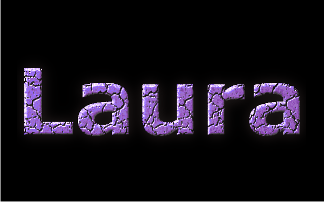
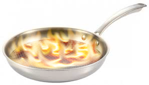
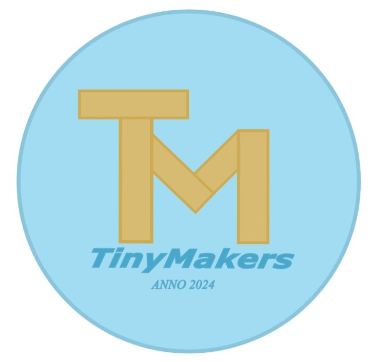
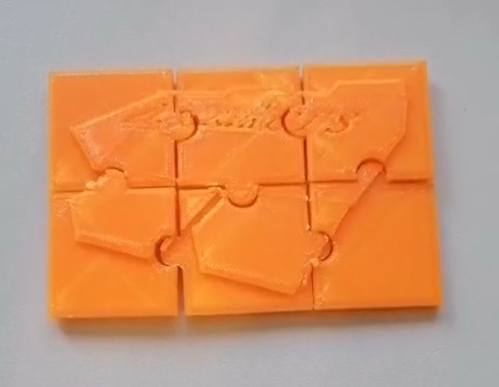
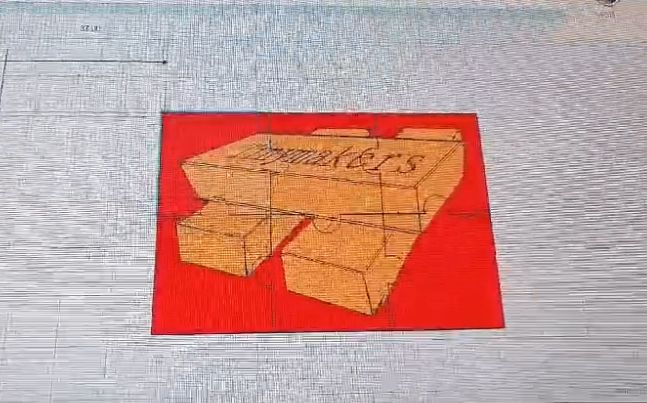
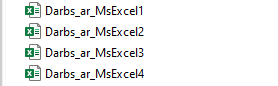
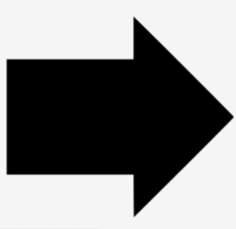

Mans datorikas portfolio
Rastrgarfika
GIMP
Septembra sākumā darbojāmies ar programmā "GIMP" un ieguvām vērtējumu par 2 attēliem, kā arī gif animāciju.
 
Vektografika
InkScape
Septembra otrajā pusē bija iespēja veikt papildus darbu programmā "InkScape". Es šo darbu diemžēl nedarīju, bet šajā pašā programmā veidoju plakātu grupu darbam.
Grupu darbs
Uzņēmums
Oktobrī mēs grupās veidojām izdomātu uzņēmumu. Mūsu grupas uzņēmums saucās "TinyMakers". Tas ražoja koka konstruktorus a magnēta iekšpusi, kurus ir iespējams savienot un veidot dažādas figūras. Katrs grupas dalībnieks programmā "InkScape" izveidoja savu uzņēmuma logo.
3D modelis
Mājaslapā "Tinkercad" katrs grupas dalībnieks izveidoja 3D puzles gabaliņu ar izvēlēto logo. Kopā šie puzles gabaliņi izveidoja veselu logo, kas tika izprintēts ar 3D printeri.
 Video
Grupas darba laikā tika filmēts viss notiekošais un pēc tam salikts vienā video. Video bija jāiekļauj arī reklāma, kura tika veidotā programmā "Powerpoint".
Ms Word
Novembra sākumā sākām darbu programmā "Word". Veicām dažādus uzdevumus par tekstapstrādi un beigās ieguvām arī vērtējumu.

Ms Excel
Decembrī darbojāmies ar programmu "Excel". Līdzīgi kā ar iepriekšējo tēmu, veicām uzdevumus un ieguvām vērtējumu.
